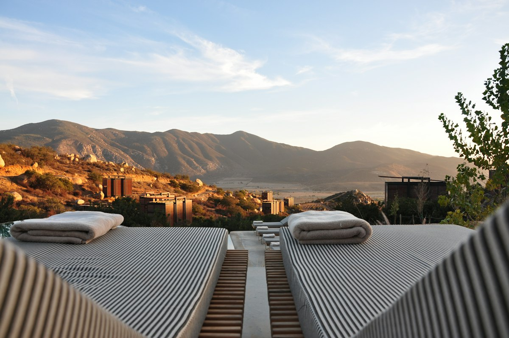

The Art of Slow Travel: Rediscovering Heritage Cities
In an era dominated by rapid flights and packed itineraries, slow travel advocates for taking a deeper, more mindful approach to exploration. Instead of ticking off ten tourist sights in two days, slow travel invites you to spend a week lingering in a single neighborhood, sipping espresso at local cafes, learning native phrases, and observing the daily rhythms of local life.
Choosing train travel over short-haul flights not only reduces your carbon footprint but transforms the journey itself into a scenic adventure. Watching countryside landscapes shift across borders provides a profound sense of scale and geographic connection that air travel simply cannot replicate.
